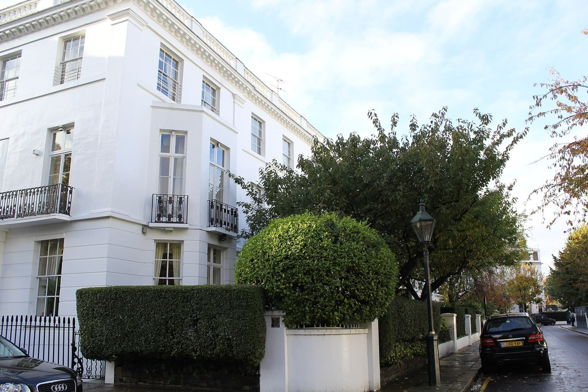

Fieldwork · demo website studies
Halden: four concepts
Each page is a visual study of the same fictional agency, with the same listings and the same search. Open each one, scroll all the way down, and tell me which to build the demo from.

Concept 1
Frame
Dark, architectural, cinematic. Slideshow hero with segmented progress, a sticky scroll scene with skewed property tiles, giant cropped wordmark footer.
Refs: Storey Architecture, Waykon Group, Fume Studio

Concept 2
Heritage
Classic luxury. Serif display type, emblem logo, typewriter search, rotating featured listing and a scroll-expanding “art of exceptional service” frame.
Refs: John Taylor, Fine & Country

Concept 3
Atelier
Editorial and warm. Giant wordmark hero, floating search card, arched imagery, drag carousel and a full-screen menu.
Refs: Mejuma Tuscany, Compound Africa, Waykon Group

Concept 4
Rail
Quiet and modern. A fixed side rail with menu drawer, index of homes with a cursor-following preview, stacking cards and a parallax quote.
Refs: John Taylor, American Housing, Bakstad, Loam House
Halden is a fictional placeholder name. Photographs are illustrative stock and repeat across sections; listings, prices and people are invented. After 15 seconds each page offers to open the listing system.